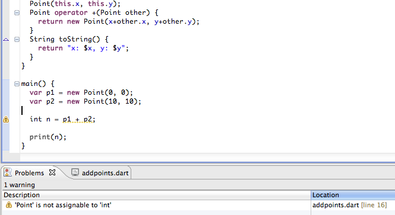

Optional Types in Dart
Written by Gilad Bracha
October 2011 (updated September 2012)
One of the Dart programming language’s most innovative features is the use of optional types. This document seeks to explain how optional types work.
Overview
The Dart language is dynamically typed. You can write programs that have no type annotations whatsoever, and run them, much as you would in JavaScript.
You may choose to add type annotations to your program:
- Adding types will not prevent your program from compiling and running—even if your annotations are incomplete or plain wrong.
- Your program will have exactly the same semantics no matter what type annotations you add.
You can nevertheless profit from adding type annotations to your code. Types provide the following benefits:
- Documentation for humans. It is much easier for people to read your code if it has judiciously placed type annotations.
- Documentation for machines. Tools can leverage type annotations in various ways. In particular, they can help provide nice features such as name completion and improved navigation in IDEs.
- Early error detection. Dart provides a static checker that can warn you about potential problems, without getting in your way. In addition, in developer mode, Dart automatically converts type annotations to runtime assertion checks as a debugging aid.
- Sometimes, types can help improve performance when compiling to JavaScript. We’ll say more about this later.
The static checker
The static checker acts a lot like lint in C. It warns you about potential problems at compile-time. Many of these warnings are related to types. The static checker does not produce errors—you can always compile and run your code, no matter what the checker says.
The checker does not scream about every possible type violation. It is not a typechecker, because Dart doesn’t use types the way a classic type system does. The checker complains about things that are very likely to be real problems, rather than forcing you to jump through hoops to satisfy a narrow-minded type system.
For example, consider:
class Point {
final num x, y;
Point(this.x, this.y);
Point operator +(Point other) {
return new Point(x+other.x, y+other.y);
}
String toString() {
return "x: $x, y: $y";
}
}
main() {
var p1 = new Point(0, 0);
var p2 = new Point(10, 10);
int n = p1 + p2;
print(n);
}
This is clearly a problem. The static checker will issue a warning in this case.

Note that the code still runs,
setting n to an instance of Point
and printing x: 10, y: 10.
However, unlike a classic mandatory type system, code like this
Object lookup(String key) { /* ... */ } // a lookup method in a heterogenous table
String s = lookup('Frankenstein');
will not cause any complaints from the checker.
That’s because there is a very good chance that the code is correct,
despite the lack of type information.
You, the programmer, often have semantic knowledge
that a typechecker does not.
You know that the value stored in the table under ‘Frankenstein’ is a string,
even though the lookup method is declared to return Object.
Type dynamic
How does Dart avoid complaints when no types are provided?
The key to this is the type dynamic,
which is the default type given when no type
is explicitly given by the programmer.
Using type dynamic makes the checker shut up.
Occasionally, you may want to use dynamic explicitly.
Map<String, dynamic> m = {
'one': new Partridge(),
'two': new TurtleDove(),
/* ..., */
'twelve': new Drummer()};
We could have used the type
Map<String, Object> for m,
but then, when we extracted the contents,
they would have static type Object,
about which very little is known.
Since the contents of the map have no common superinterface
other than Object,
we may prefer to use dynamic.
If we try to call methods on the map’s values, for example,
pearTree = m['one'].container();
we would get a warning if the contents were of type Object,
because Object does not support container.
If we use type dynamic, no warning is issued.
Generics
Dart supports reified generics. That is, objects of generic type carry their type arguments with them at run time. Passing type arguments to a constructor of a generic type is a runtime operation. How does this square with the claim that types are optional?
Well, if you don’t want to ever think about types, generics won’t force you to. You can create instances of generic classes without providing type parameters. For example:
new List();
works just fine. Of course, you can write
new List<String>();
if you want.
new List();
is just a shorthand for
new List<dynamic>();
In constructors, type parameters play a runtime role. They are actually passed at run time, so that you can use them when you do dynamic type tests.
new List<String>() is List<Object> // true: every string is an object new List<Object>() is List<String> // false: not all objects are strings
Generics in Dart conform to programmer intuition. Here are some more interesting cases:
new List<String>() is List<int> // false new List<String>() is List // true new List<String>() is List<dynamic> // same as line above new List() is List<dynamic> // true, these are exactly the same
In contrast, type annotations (for example, types added to the declarations of variables, or as return types of functions and methods) play no runtime role and have no effect on program semantics. One last case worth studying:
new List() is List<String> // true as well!
You may be writing your program without types, but you will frequently be passing data into typed libraries. To prevent types getting in your way, generic types without type parameters are considered substitutable (subtypes of) for any other version of that generic.
Checked mode
Dart programs can be run in checked mode during development. If you run a program in checked mode, the system will automatically execute certain type checks when passing in parameters, when returning results, and when executing assignments. If the checks fail, execution will stop at that point with a clear error message. So,
String s = new Object();
will stop the code in its tracks,
because Object is not a subtype of String.
However
Object foo() {
return "x";
}
String s = foo();
works just fine,
because the actual object returned by foo at run time is a String,
even though the type signature says foo returns an Object.
When an object is assigned to a variable,
Dart checks that the runtime type of the object
is a subtype of the declared (static) type of the variable.
Essentially, checked mode is like running your program under the debugger with watchpoints that run a subtype check on every assignment, return, and so on. Some more examples:
<int>[0,1, 1][2] = new Object(); // fails in checked mode
bar(int n) {
return n *2;
}
...
bar(3.2); // returns 6.4 in production, but fails in checked mode
In checked mode , every time an argument is passed to a function, the runtime type of the argument is tested to see if it is a subtype of the declared type of the formal parameter. We can correct this easily:
bar(num n) {
return n *2;
}
...
bar(3.2); // works fine
int i_bar(num n) {
return n *2;
}
...
i_bar(3.2); // fails in checked mode
// because returned value is not an int
Notice the last line. The check happens on returned values, even if the result of the function is not assigned to anything.
Let’s return to our old friend Frankenstein.
Object lookup(String key) { /* ... */ } // a lookup method in a heterogenous table
String s = lookup('Frankenstein');
If we are correct in our assumption that the lookup returns a string,
checked mode will execute smoothly.
If we’re wrong, it will catch our mistake for us.
In production mode, the code will run without complaint.
Assume the lookup actually returns an object that isn’t a string,
say an instance of class Frankenstein.
The variable s will contain that instance.
In no case will Dart do a magical coercion into a string.
If it did, that would mean the type annotation
was modifying the behavior of our program,
and types would not be optional anymore.
Of course, if you don’t use types at all, checked mode won’t get in your way.
my_add(s1, s2) {
return s1 + s2;
}
my_add(3, 4); // 7
my_add(new Point(3, 3), new Point(4, 4)); // Point(7, 7)
All these checks impose a considerable performance penalty, so one cannot usually afford to run them in production. The benefit of such checks is that they can trap dynamic type errors at their source, making it easier to debug problems. Most such problems are detected during testing anyway, but checked mode helps localize them.
Using types
How you use types is up to you. If you hate types, you need not use them at all. You won’t get any type warnings, and you can develop in the style you feel comfortable with in other dynamic languages. You can still benefit from types, because the Dart libraries have type signatures that tell you what they expect and what they return. If you run in checked mode, and pass bad arguments to the library, checked mode will detect that at the point where you made the mistake.
If you love types, you may use them everywhere, much like in a statically typed language. However, even then you won’t get the same level of static checking. Dart’s rules are much less rigid. We anticipate providing additional tools that might interpret type annotations more strictly for those who like that sort of thing.
We don’t recommend either of these extremes. Use types where they make sense. The most valuable thing you can do is add types to the headers of public members of your libraries. Next, do the same for the private ones. Even if nobody else has to maintain the code, you will find it helpful if you leave the code and come back in a few weeks or months. In both cases, you don’t necessarily have to add types to the bodies of methods or functions. Users of the library get value from type signatures, even if they are not 100% accurate.
Within the bodies of functions, it may not always pay to annotate declarations. Sometimes the code is simple enough that it doesn’t really matter, and types might just create clutter.
Usually, you should design your code without letting type considerations influence your design. In some cases, there are alternate designs, one of which plays better with types than another. For example, rather than passing around strings denoting function names to be invoked, if you can pass a function instead, your code will be both more efficient and easier to typecheck. Dart discourages gratuitous use of reflection by other means as well. However, you should not hesitate to use reflection when it truly makes sense.